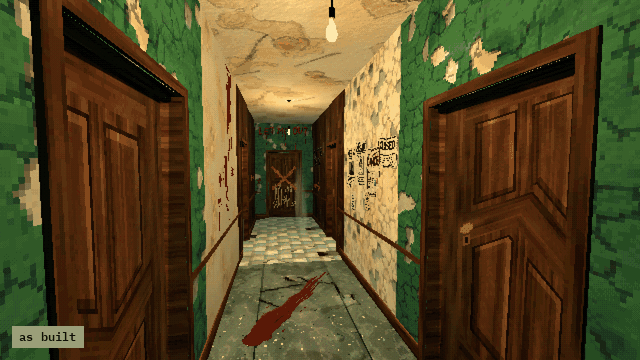

Tutorials › Rot a Room at Run Time
How to Rot a Room at Run Time in Godot 4
A room that decays while the player is away, and a decal where they look.

A room that changes while the player is away: when they walk out through the doorway, every surface in it turns from medium to heavy decay, once, so it has rotted when they come back. And a decal, a bloody handprint at its real size, on whatever the camera looks at, facing out of the surface.
Script: room_rot.gd (MIT) · Godot 4.3 or newer · its folder on GitHub
How to use it
- Add
room_rot.gdto a Node3D in the level and setroom(the node that holds the room's meshes) anddoorway(an Area3D across the doorway). - Put the player in the group
player. - Call
mark_wall(camera)to put the handprint where the camera looks.
What it needs
decay_swap.gdand the handprint decal scene from Haunted PSX Interior Textures, at the paths the script preloads.- Surfaces whose materials come in pairs,
<family>_medium.tresand<family>_heavy.tres, in that pack's material folders:decay_swap.gdswaps one for the other.
Try it free
The Haunted PSX Free Sampler has decay_swap.gd, the handprint, 4 more decals and 3 of the surfaces in their medium state: the decal works with it, and the swap to heavy needs the full pack's heavy materials.
How it was tested
In Godot 4.3 and 4.7.2, in the free sampler's project: leaving through the doorway turns the room's medium surface heavy once, and only for the player (the test adds a heavy material beside the sampler's medium one); mark_wall puts the handprint on the wall the camera looks at, facing out.
The code
extends Node3D
## How to Rot a Room at Run Time in Godot 4
## Cordatix Godot 4 PSX tutorials, MIT licensed: https://github.com/GoldenSparrow-Dev/cordatix-godot-psx-tutorials
## The devlog: https://cordatix.itch.io/haunted-psx-interior-textures/devlog/1722195/how-to-rot-a-room-at-run-time-in-godot-4-haunted-psx-interior-textures
const Decay := preload("res://cordatix/haunted_psx_interior_textures/scripts/decay_swap.gd")
## The room this script rots, and the area the player leaves it through.
@export var room: Node3D
@export var doorway: Area3D
var rotted := false
func _ready() -> void:
doorway.body_exited.connect(_on_left)
## When the player walks out, every surface of the pack in the room turns heavy, once.
func _on_left(body: Node3D) -> void:
if rotted or not body.is_in_group("player"):
return
rotted = true
Decay.set_level(room, "heavy")
const HANDPRINT := preload("res://cordatix/haunted_psx_interior_textures/decals/decal_blood_handprint.tscn")
## A decal on whatever the camera looks at: a quad 2 mm off the surface, turned to face out of it.
func mark_wall(camera: Camera3D) -> void:
var from := camera.global_position
var to := from - camera.global_basis.z * 3.0
var hit := get_world_3d().direct_space_state.intersect_ray(PhysicsRayQueryParameters3D.create(from, to))
if hit.is_empty():
return
var n: Vector3 = hit["normal"]
var decal: Node3D = HANDPRINT.instantiate()
add_child(decal)
var up := Vector3.UP if absf(n.dot(Vector3.UP)) < 0.99 else Vector3.FORWARD
decal.global_transform = Transform3D(Basis.looking_at(-n, up), hit["position"])
The devlog and the pack
The step-by-step walkthrough is the devlog How to Rot a Room at Run Time in Godot 4 (Haunted PSX Interior Textures) on itch.io, written for Haunted PSX Interior Textures, a PS1-style asset pack by Cordatix for Godot 4, Unity, Unreal and Blender.